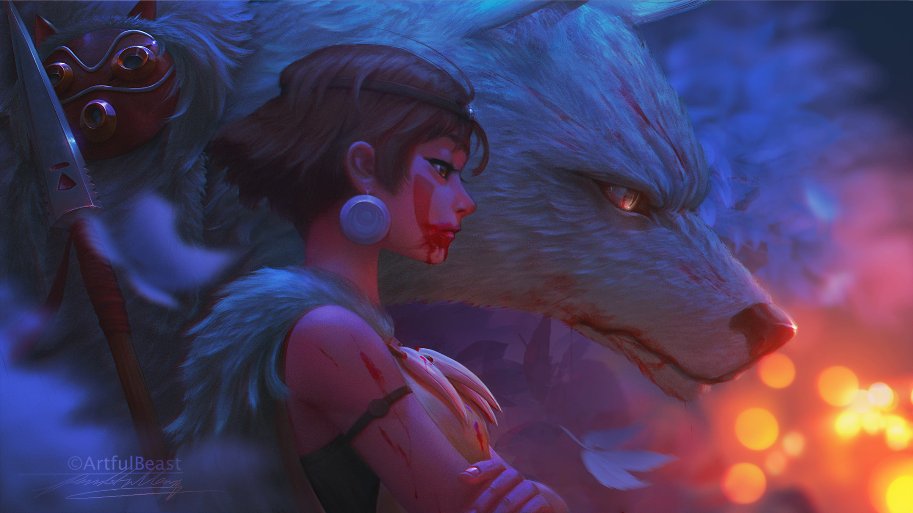
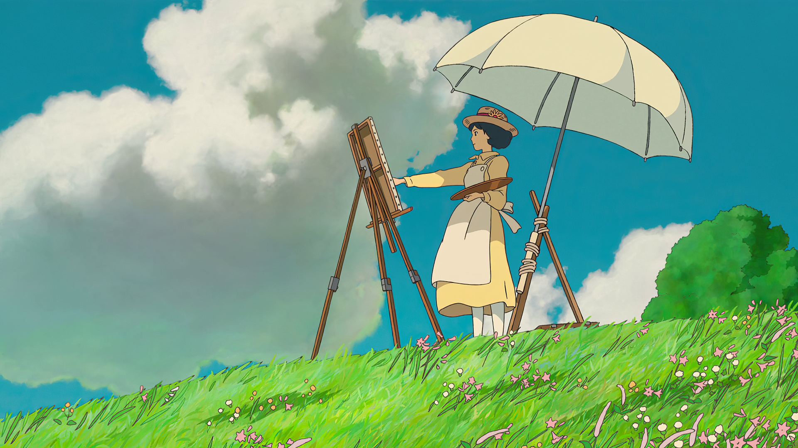
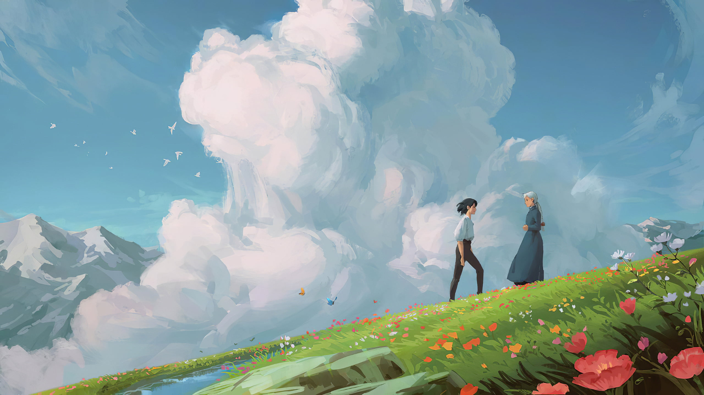
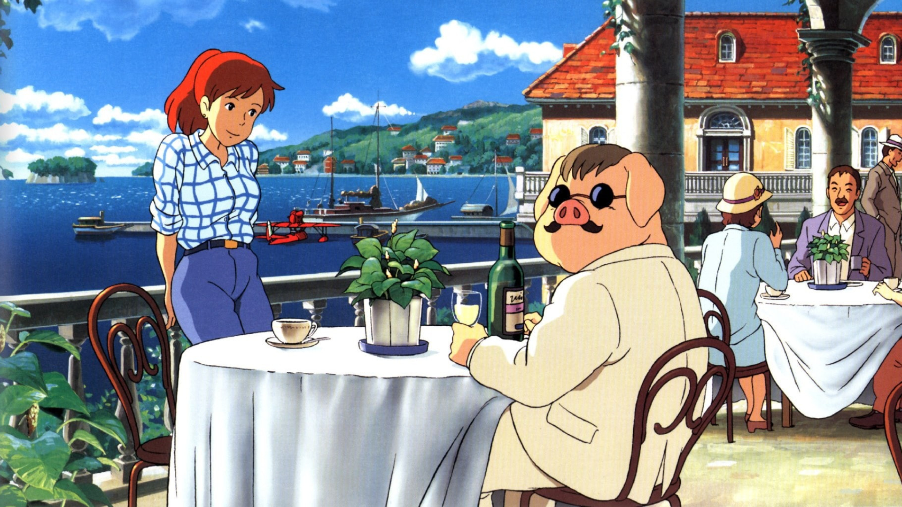
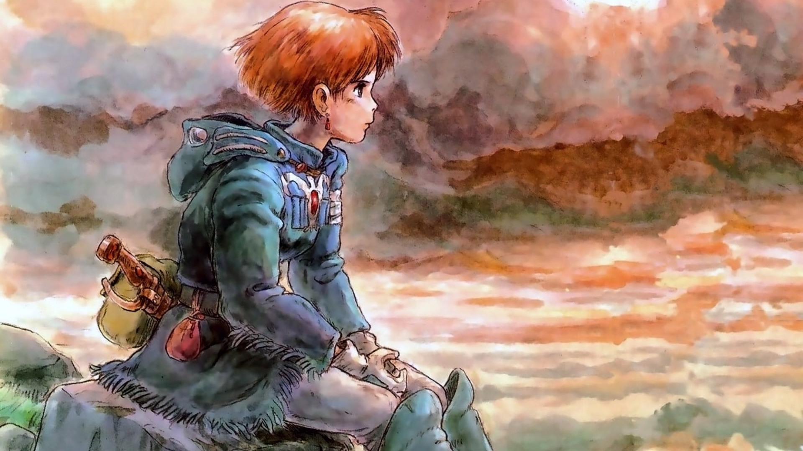
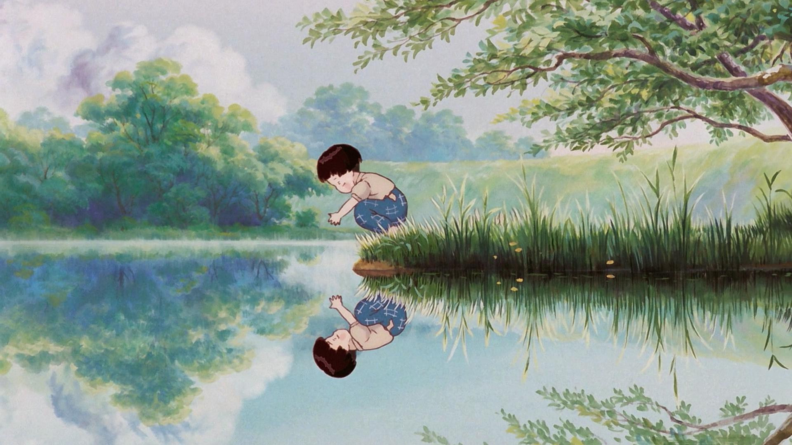

Deux petites filles viennent s'installer avec leur père dans une grande maison à la campagne afin de se rapprocher de l'hôpital ou séjourne leur mère. Elles vont découvrir l'existence de créatures merveilleuses, mais très discrètes, les totoros.
Le totoro est une créature rare et fascinante, un esprit de la forêt. Il se nourrit de glands et de noix. Il dort le jour, mais les nuits de pleine lune, il aime jouer avec des ocarinas magiques. Il peut voler et est invisible aux yeux des humains. Il existe trois totoros : O totoro (gros), chu totoro (moyen) et chili totoro (petit).

La petite Chihiro accompagne ses parents dans une promenade sylvestre qui doit les conduire vers leur nouvelle maison en banlieue. Alors qu'elle prend un raccourci à travers un tunnel peu emprunté, la petite famille se retrouve soudain en territoire inconnu. Le temps de retrouver leur chemin, ils font une halte dans un gigantesque restaurant en plein air, totalement déserté.

Le petit Sosuke, cinq ans, habite un village construit au sommet d'une falaise qui surplombe la Mer Intérieure. Un beau matin, alors qu'il joue sur la plage en contrebas, il découvre une petite fille poisson rouge nommée Ponyo, piégée dans un pot de confiture. Sosuke la sauve, et décide de la garder avec lui dans un seau. Ponyo est aussi fascinée par Sosuke que ce dernier l'est par elle.

Ashitaka, un jeune guerrier japonais, affronte un sanglier géant et furieux qui attaque son village. Il tue la bête, mais se retrouve atteint par un mal mystérieux. Sur le conseil des sages, il part vers l'Ouest, à la recherche de ce qui a transformé l'animal en démon. Au cours de son périple, il rencontre San, une jeune fille qui vit avec les loups. Ashitaka apprend que les humains sont à l'origine de tous ces maux, car ils détruisent la forêt, qu'ils exploitent pour alimenter leurs forges.

Au Japon, dans les années 1910, le jeune Jiro Horikoshi est fasciné par les réalisations du concepteur d'avions Giovanni Caproni. Dans ses rêves, il s'envole dans l'azur et le rencontre. Il voudrait devenir pilote, mais il sait que sa vue déficiente ne le lui permettra jamais. Le temps venu, il décide d'entreprendre des études en génie aéronautique et les réussit brillamment. En 1927, il est engagé dans une prestigieuse entreprise d'ingénierie.

Sophie, une orpheline de 18 ans, travaille dur dans la boutique de chapelier que lui a laissée son père. Un jour, en ville, elle croise Hauru, un magicien très séduisant mais faible de caractère. Une sorcière, se méprenant sur leurs sentiments, change Sophie en une vieille femme de 90 ans. Désespérée, Sophie erre dans la campagne quand elle aperçoit un étrange château qui se déplace sur d'immenses pattes.

En Italie, à la fin des années 20. Refusant de devenir un héros de la nation, Marco, un pilote hors pair, accepte volontairement de subir un mauvais sort qui le transforme en cochon. A la même période, bon nombre de pilotes désoeuvrés ont formé un gang de pirates de l'air, pour mieux pouvoir détrousser les riches vacanciers amateurs de croisières nautiques.

Sur une Terre ravagée par la folie des hommes durant les sept jours de feu, une poignée d'humains a survécu. Menacée par une forêt toxique qui ne cesse de prendre de l'ampleur, cette poignée de survivants attend le salut de la princesse Nausicaä, capable de communiquer avec tous les êtres vivants.

Japon, été 1945. Les bombardiers américains arrosent Kobé de plusieurs milliers de tonnes de bombes incendiaires. Un jeune adolescent et sa petite soeur perdent leurs parents. Ils se réfugient dans leur famille proche mais cruelle. Leur quête désespérée d'un monde meilleur les amènera à traverser autant les ruines du Japon ensanglanté par la fin de cette guerre qu'à affronter l'indifférence et la cruauté des adultes...